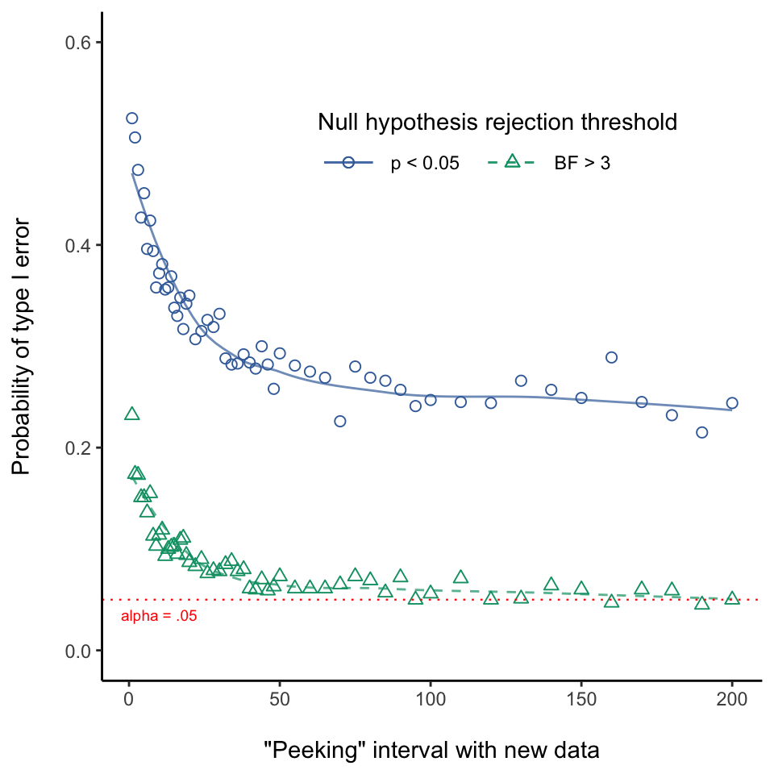
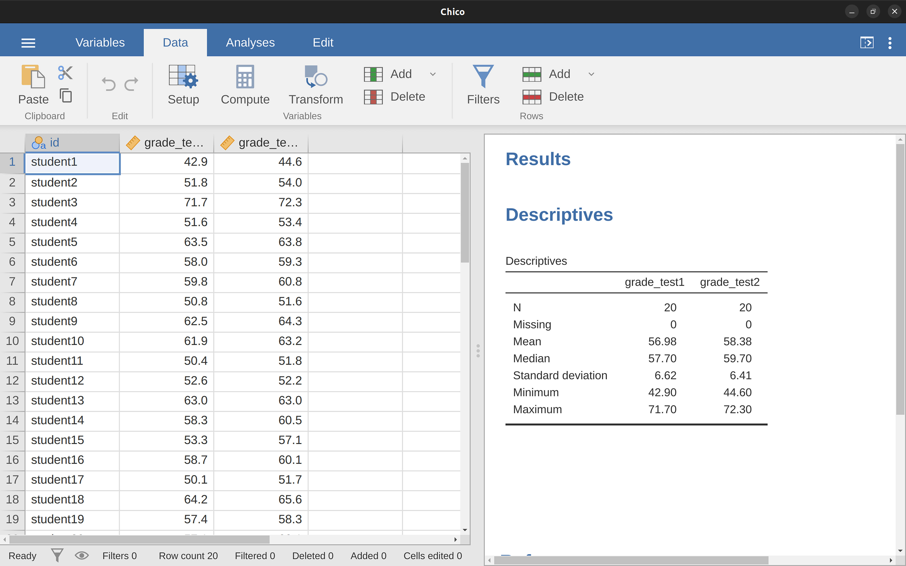
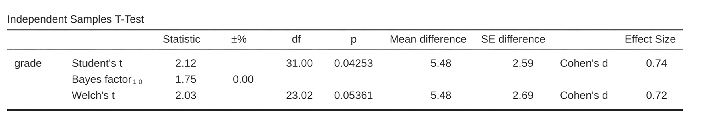
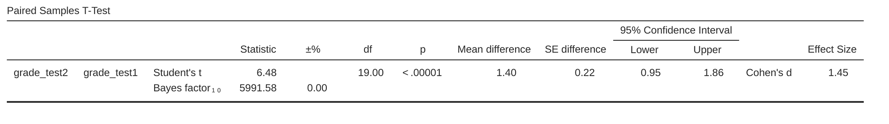

| Hypothesis | Degree of Belief |
|---|---|
| Rainy day | 0.15 |
| Dry day | 0.85 |
16 Bayesian statistics
In our reasonings concerning matter of fact, there are all imaginable degrees of assurance, from the highest certainty to the lowest species of moral evidence. A wise man, therefore, proportions his belief to the evidence.
– David Hume1
The ideas I’ve presented to you in this book describe inferential statistics from the frequentist perspective. I’m not alone in doing this. In fact, almost every textbook given to undergraduate psychology students presents the opinions of the frequentist statistician as the theory of inferential statistics, the one true way to do things. I have taught this way for practical reasons. The frequentist view of statistics dominated the academic field of statistics for most of the 20th century, and this dominance is even more extreme among applied scientists. It was and is current practice among psychologists to use frequentist methods. Because frequentist methods are ubiquitous in scientific papers, every student of statistics needs to understand those methods, otherwise they will be unable to make sense of what those papers are saying! Unfortunately, in my opinion at least, the current practice in psychology is often misguided, and the reliance on frequentist methods is partly to blame. In this chapter I explain why I think this and provide an introduction to Bayesian statistics, an approach that I think is generally superior to the orthodox approach.
This chapter comes in two parts. In the first three sections I talk about what Bayesian statistics are all about, covering the basic mathematical rules for how it works as well as an explanation for why I think the Bayesian approach is so useful. Afterwards, I provide a brief overview of how you can do Bayesian \(t\)-tests.
16.1 Probabilistic reasoning by rational agents
From a Bayesian perspective statistical inference is all about belief revision. I start out with a set of candidate hypotheses, \(h\), about the world. I don’t know which of these hypotheses is true, but do I have some beliefs about which hypotheses are plausible and which are not. When I observe the data, \(d\), I have to revise those beliefs. If the data are consistent with a hypothesis, my belief in that hypothesis is strengthened. If the data are inconsistent with the hypothesis, my belief in that hypothesis is weakened. That’s it! At the end of this section I’ll give a precise description of how Bayesian reasoning works, but first I want to work through a simple example in order to introduce the key ideas. Consider the following reasoning problem:
I’m carrying an umbrella. Do you think it will rain?
In this problem I have presented you with a single piece of data (\(d\) = I’m carrying the umbrella), and I’m asking you to tell me your belief or hypothesis about whether it’s raining. You have two alternatives, \(h\): either it will rain today or it will not. How should you solve this problem?
16.1.1 Priors: what you believed before
The first thing you need to do is ignore what I told you about the umbrella, and write down your pre-existing beliefs about rain. This is important. If you want to be honest about how your beliefs have been revised in the light of new evidence (data) then you must say something about what you believed before those data appeared! So, what might you believe about whether it will rain today? You probably know that I live in Australia and that much of Australia is hot and dry. The city of Adelaide where I live has a Mediterranean climate, very similar to southern California, southern Europe or northern Africa. I’m writing this in January and so you can assume it’s the middle of summer. In fact, you might have decided to take a quick look on Wikipedia2 and discovered that Adelaide gets an average of 4.4 days of rain across the 31 days of January. Without knowing anything else, you might conclude that the probability of January rain in Adelaide is about 15%, and the probability of a dry day is 85% (see Table 16.1). If this is really what you believe about Adelaide rainfall (and now that I’ve told it to you I’m betting that this really is what you believe) then what I have written here is your prior distribution, written \(P(h)\).
16.1.2 Likelihoods: theories about the data
To solve the reasoning problem you need a theory about my behaviour. When does Danielle carry an umbrella? You might guess that I’m not a complete idiot,3 and I try to carry umbrellas only on rainy days. On the other hand, you also know that I have young kids, and you wouldn’t be all that surprised to know that I’m pretty forgetful about this sort of thing. Let’s suppose that on rainy days I remember my umbrella about 30% of the time (I really am awful at this). But let’s say that on dry days I’m only about 5% likely to be carrying an umbrella. So you might write this out as in Table 16.2.
| Data | Data | |
|---|---|---|
| Hypothesis | Umbrella | No umbrella |
| Rainy day | 0.30 | 0.70 |
| Dry day | 0.05 | 0.95 |
It’s important to remember that each cell in this table describes your beliefs about what data \(d\) will be observed, given the truth of a particular hypothesis \(h\). This “conditional probability” is written \(P(d|h)\), which you can read as “the probability of \(d\) given \(h\)”. In Bayesian statistics, this is referred to as the likelihood of the data \(d\) given the hypothesis \(h\).4
16.1.3 The joint probability of data and hypothesis
At this point all the elements are in place. Having written down the priors and the likelihood, you have all the information you need to do Bayesian reasoning. The question now becomes how do we use this information? As it turns out, there’s a very simple equation that we can use here, but it’s important that you understand why we use it, so I’m going to try to build it up from more basic ideas.
Let’s start out with one of the rules of probability theory. I listed it way back in Table 7.1, but I didn’t make a big deal out of it at the time, and you probably ignored it. The rule in question is the one that talks about the probability that two things are true. In our example, you might want to calculate the probability that today is rainy (i.e., hypothesis \(h\) is true) and I’m carrying an umbrella (i.e., data \(d\) is observed). The joint probability of the hypothesis and the data is written \(P(d,h)\), and you can calculate it by multiplying the prior \(P(h)\) by the likelihood \(P(d|h)\). Mathematically, we say that: \[P(d,h)=P(d|h)P(h)\]
So, what is the probability that today is a rainy day and I remember to carry an umbrella? As we discussed earlier, the prior tells us that the probability of a rainy day is 15%, and the likelihood tells us that the probability of me remembering my umbrella on a rainy day is 30%. So the probability that both of these things are true is calculated by multiplying the two: \[ \begin{split} P(rainy, umbrella) & = P(umbrella|rainy) \times P(rainy) \\ & = 0.30 \times 0.15 \\ & = 0.045 \end{split} \]
In other words, before being told anything about what actually happened, you think that there is a 4.5% probability that today will be a rainy day and that I will remember an umbrella. However, there are of course four possible things that could happen, right? So let’s repeat the exercise for all four. If we do that, we end up with Table 16.3.
| Umbrella | No-umbrella | |
|---|---|---|
| Rainy | 0.045 | 0.105 |
| Dry | 0.0425 | 0.807 |
This table captures all the information about which of the four possibilities are likely. To really get the full picture, though, it helps to add the row totals and column totals. That gives us Table 16.4.
| Umbrella | No-umbrella | Total | |
|---|---|---|---|
| Rainy | 0.045 | 0.105 | 0.15 |
| Dry | 0.0425 | 0.807 | 0.85 |
| Total | 0.0875 | 0.912 | 1 |
This is a very useful table, so it’s worth taking a moment to think about what all these numbers are telling us. First, notice that the row sums aren’t telling us anything new at all. For example, the first row tells us that if we ignore all this umbrella business, the chance that today will be a rainy day is 15%. That’s not surprising, of course, as that’s our prior.5 The important thing isn’t the number itself. Rather, the important thing is that it gives us some confidence that our calculations are sensible! Now take a look at the column sums and notice that they tell us something that we haven’t explicitly stated yet. In the same way that the row sums tell us the probability of rain, the column sums tell us the probability of me carrying an umbrella. Specifically, the first column tells us that on average (i.e., ignoring whether it’s a rainy day or not) the probability of me carrying an umbrella is 8.75%. Finally, notice that when we sum across all four logically-possible events, everything adds up to 1. In other words, what we have written down is a proper probability distribution defined over all possible combinations of data and hypothesis.
Now, because this table is so useful, I want to make sure you understand what all the elements correspond to and how they written (Table 16.5).
| Umbrella | No-umbrella | ||
|---|---|---|---|
| Rainy | P(Umbrella, Rainy) | P(No-umbrella, Rainy) | P(Rainy) |
| Dry | P(Umbrella, Dry) | P(No-umbrella, Dry) | P(Dry) |
| P(Umbrella) | P(No-umbrella) |
Finally, let’s use “proper” statistical notation. In the rainy day problem, the data corresponds to the observation that I do or do not have an umbrella. So we’ll let \(d_1\) refer to the possibility that you observe me carrying an umbrella, and \(d_2\) refers to you observing me not carrying one. Similarly, \(h_1\) is your hypothesis that today is rainy, and \(h_2\) is the hypothesis that it is not. Using this notation, the table looks like Table 16.6.
| \( d_1 \) | \( d_2 \) | ||
|---|---|---|---|
| \( h_1 \) | \(P(h_1, d_1)\) | \(P(h_1, d_2)\) | \( P(h_1) \) |
| \( h_2 \) | \(P(h_2, d_1)\) | \(P(h_2, d_2)\) | \( P(h_2) \) |
| \( P(d_1) \) | \( P(d_2) \) |
16.1.4 Updating beliefs using Bayes’ rule
The table we laid out in the last section is a very powerful tool for solving the rainy day problem, because it considers all four logical possibilities and states exactly how confident you are in each of them before being given any data. It’s now time to consider what happens to our beliefs when we are actually given the data. In the rainy day problem, you are told that I really am carrying an umbrella. This is something of a surprising event. According to our table, the probability of me carrying an umbrella is only 8.75%. But that makes sense, right? A woman carrying an umbrella on a summer day in a hot dry city is pretty unusual, and so you really weren’t expecting that. Nevertheless, the data tells you that it is true. No matter how unlikely you thought it was, you must now adjust your beliefs to accommodate the fact that you now know that I have an umbrella.6 To reflect this new knowledge, our revised table must have the following numbers. (see Table 16.7).
| Umbrella | No-umbrella | |
|---|---|---|
| Rainy | 0 | |
| Dry | 0 | |
| Total | 1 | 0 |
In other words, the facts have eliminated any possibility of “no umbrella”, so we have to put zeros into any cell in the table that implies that I’m not carrying an umbrella. Also, you know for a fact that I am carrying an umbrella, so the column sum on the left must be 1 to correctly describe the fact that \(P(umbrella) = 1\).
What two numbers should we put in the empty cells? Again, let’s not worry about the maths, and instead think about our intuitions. When we wrote out our table the first time, it turned out that those two cells had almost identical numbers, right? We worked out that the joint probability of “rain and umbrella” was 4.5%, and the joint probability of “dry and umbrella” was 4.25%. In other words, before I told you that I am in fact carrying an umbrella, you’d have said that these two events were almost identical in probability, yes? But notice that both of these possibilities are consistent with the fact that I actually am carrying an umbrella. From the perspective of these two possibilities, very little has changed. I hope you’d agree that it’s still true that these two possibilities are equally plausible. So what we expect to see in our final table is some numbers that preserve the fact that “rain and umbrella” is slightly more plausible than “dry and umbrella”, while still ensuring that numbers in the table add up. Something like Table 16.8, perhaps?
| Umbrella | No-umbrella | |
|---|---|---|
| Rainy | 0.514 | 0 |
| Dry | 0.486 | 0 |
| Total | 1 | 0 |
What this table is telling you is that, after being told that I’m carrying an umbrella, you believe that there’s a 51.4% chance that today will be a rainy day, and a 48.6% chance that it won’t. That’s the answer to our problem! The posterior probability of rain \(P(h\|d)\) given that I am carrying an umbrella is 51.4%.
How did I calculate these numbers? You can probably guess. To work out that there was a \(0.514\) probability of “rain”, all I did was take the \(0.045\) probability of “rain and umbrella” and divide it by the \(0.0875\) chance of “umbrella”. This produces a table that satisfies our need to have everything sum to 1, and our need not to interfere with the relative plausibility of the two events that are actually consistent with the data. To say the same thing using fancy statistical jargon, what I’ve done here is divide the joint probability of the hypothesis and the data \(P(d, h)\) by the marginal probability of the data \(P(d)\), and this is what gives us the posterior probability of the hypothesis given the data that have been observed. To write this as an equation:7
However, remember what I said at the start of the last section, namely that the joint probability, \(P(d, h)\), is calculated by multiplying the prior, \(P(h)\), by the likelihood, \(P(d|h)\). In real life, the things we actually know how to write down are the priors and the likelihood, so let’s substitute those back into the equation. This gives us the following formula for the posterior probability: \[P(h|d)=\frac{P(d|h)P(h)}{P(d)}\]
And this formula, folks, is known as Bayes’ rule. It describes how a learner starts out with prior beliefs about the plausibility of different hypotheses, and tells you how those beliefs should be revised in the face of data. In the Bayesian paradigm, all statistical inference flows from this one simple rule.
16.2 Bayesian hypothesis tests
In Chapter 9 I described the orthodox approach to hypothesis testing. It took an entire chapter to describe, because null hypothesis testing is a very elaborate contraption that people find very hard to make sense of. In contrast, the Bayesian approach to hypothesis testing is incredibly simple. Let’s pick a setting that is closely analogous to the orthodox scenario. There are two hypotheses that we want to compare, a null hypothesis, \(h_0\), and an alternative hypothesis, \(h_1\). Prior to running the experiment we have some beliefs, \(P(h)\), about which hypotheses are true. We run an experiment and obtain data, \(d\). Unlike frequentist statistics, Bayesian statistics does allow us to talk about the probability that the null hypothesis is true. Better yet, it allows us to calculate the posterior probability of the null hypothesis, using Bayes’ rule: \[P(h_0|d)=\frac{P(d|h_0)P(h_0)}{P(d)}\]
This formula tells us exactly how much belief we should have in the null hypothesis after having observed the data, \(d\). Similarly, we can work out how much belief to place in the alternative hypothesis using essentially the same equation. All we do is change the subscript: \[P(h_1|d)=\frac{P(d|h_1)P(h_1)}{P(d)}\]
It’s all so simple that I feel like an idiot even bothering to write these equations down, since all I’m doing is copying Bayes’ rule from the previous section.8
16.2.1 The Bayes factor
In practice, most Bayesian data analysts tend not to talk in terms of the raw posterior probabilities \(P(h_0|d)\) and \(P(h_1|d)\). Instead, we tend to talk in terms of the posterior odds ratio. Think of it like betting. Suppose, for instance, the posterior probability of the null hypothesis is 25%, and the posterior probability of the alternative is 75%. The alternative hypothesis is three times as probable as the null, so we say that the odds are 3:1 in favour of the alternative. Mathematically, all we have to do to calculate the posterior odds is divide one posterior probability by the other: \[\frac{P(h_1|d)}{P(h_0|d)}=\frac{0.75}{0.25}=3\]
Or, to write the same thing in terms of the equations above: \[\frac{P(h_1|d)}{P(h_0|d)}=\frac{P(d|h_1)}{P(d|h_0)} \times \frac{P(h_1)}{P(h_0)}\]
Actually, this equation is worth expanding on. There are three different terms here that you should know. On the left-hand side, we have the posterior odds, which tells you what you believe about the relative plausibilty of the null hypothesis and the alternative hypothesis after seeing the data. On the right-hand side, we have the prior odds, which indicates what you thought before seeing the data. In the middle, we have the Bayes factor, which describes the amount of evidence provided by the data (Table 16.9).
| \(\frac{P(h_1|d)}{h_0|d}\) | \(=\) | \(\frac{P(d|h_1)}{d|h_0}\) | \(\times \) | \(\frac{P(h_1)}{h_0}\) |
|---|---|---|---|---|
| \(\Uparrow\) | \(\Uparrow\) | \(\Uparrow\) | ||
| Posterior odds | Bayes factor | Prior odds |
The Bayes factor (sometimes abbreviated as BF) has a special place in Bayesian hypothesis testing, because it serves a similar role to the \(p\)-value in orthodox hypothesis testing. The Bayes factor quantifies the strength of evidence provided by the data, and as such it is the Bayes factor that people tend to report when running a Bayesian hypothesis test.
The reason for reporting Bayes factors rather than posterior odds is that different researchers will have different priors. Some people might have a strong bias to believe the null hypothesis is true, others might have a strong bias to believe it is false. Because of this, the polite thing for an applied researcher to do is report the Bayes factor. That way, anyone reading the paper can multiply the Bayes factor by their own personal prior odds, and they can work out for themselves what the posterior odds would be. In any case, by convention we like to pretend that we give equal consideration to both the null hypothesis and the alternative, in which case the prior odds equals 1, and the posterior odds becomes the same as the Bayes factor.
16.2.2 Interpreting Bayes factors
One of the really nice things about the Bayes factor is the numbers are inherently meaningful. If you run an experiment and you compute a Bayes factor of 4, it means that the evidence provided by your data corresponds to betting odds of 4:1 in favour of the alternative. However, there have been some attempts to quantify the standards of evidence that would be considered meaningful in a scientific context. The two most widely used are from Jeffreys (1961) and Kass & Raftery (1995). Of the two, I tend to prefer the Kass & Raftery (1995) table because it’s a bit more conservative. So here it is (Table 16.10).
| Bayes factor | Interpretation |
|---|---|
| 1 - 3 | Negligible evidence |
| 3-20 | Positive evidence |
| 20-150 | Strong evidence |
| > 150 | Very strong evidence |
And to be perfectly honest, I think that even the Kass & Raftery (1995) standards are being a bit charitable. If it were up to me, I’d have called the “positive evidence” category “weak evidence”. To me, anything in the range 3:1 to 20:1 is “weak” or “modest” evidence at best. But there are no hard and fast rules here. What counts as strong or weak evidence depends entirely on how conservative you are and upon the standards that your community insists upon before it is willing to label a finding as “true”.
In any case, note that all the numbers listed above make sense if the Bayes factor is greater than 1 (i.e., the evidence favours the alternative hypothesis). However, one big practical advantage of the Bayesian approach relative to the orthodox approach is that it also allows you to quantify evidence for the null. When that happens, the Bayes factor will be less than 1. You can choose to report a Bayes factor less than 1, but to be honest I find it confusing. For example, suppose that the likelihood of the data under the null hypothesis \(P(d|h_0)\) is equal to 0.2, and the corresponding likelihood \(P(d|h_1)\) under the alternative hypothesis is 0.1. Using the equations given above, Bayes factor here would be: \[BF=\frac{P(d|h_1)}{P(d|h_0)}=\frac{0.1}{0.2}=0.5\] Read literally, this result tells is that the evidence in favour of the alternative is 0.5 to 1. I find this hard to understand. To me, it makes a lot more sense to turn the equation “upside down”, and report the amount op evidence in favour of the null. In other words, what we calculate is this: \[BF^{'}=\frac{P(d|h_0)}{P(d|h_1)}=\frac{0.2}{0.1}=2\] And what we would report is a Bayes factor of 2:1 in favour of the null. Much easier to understand, and you can interpret this using the table above.
16.3 Why be a Bayesian?
Up to this point I’ve focused exclusively on the logic underpinning Bayesian statistics. We’ve talked about the idea of “probability as a degree of belief”, and what it implies about how a rational agent should reason about the world. The question that you have to answer for yourself is this: how do you want to do your statistics? Do you want to be an orthodox statistician, relying on sampling distributions and \(p\)-values to guide your decisions? Or do you want to be a Bayesian, relying on things like prior beliefs, Bayes factors and the rules for rational belief revision? And to be perfectly honest, I can’t answer this question for you. Ultimately it depends on what you think is right. It’s your call and your call alone. That being said, I can talk a little about why I prefer the Bayesian approach.
16.3.1 Statistics that mean what you think they mean
You keep using that word. I do not think it means what you think it means
– Inigo Montoya, The Princess Bride9
To me, one of the biggest advantages to the Bayesian approach is that it answers the right questions. Within the Bayesian framework, it is perfectly sensible and allowable to refer to “the probability that a hypothesis is true”. You can even try to calculate this probability. Ultimately, isn’t that what you want your statistical tests to tell you? To an actual human being, this would seem to be the whole point of doing statistics, i.e., to determine what is true and what isn’t. Any time that you aren’t exactly sure about what the truth is, you should use the language of probability theory to say things like “there is an 80% chance that Theory A is true, but a 20% chance that Theory B is true instead”.
This seems so obvious to a human, yet it is explicitly forbidden within the orthodox framework. To a frequentist, such statements are a nonsense because “the theory is true” is not a repeatable event. A theory is true or it is not, and no probabilistic statements are allowed, no matter how much you might want to make them. There’s a reason why, back in Section 9.5, I repeatedly warned you not to interpret the \(p\)-value as the probability that the null hypothesis is true. There’s a reason why almost every textbook on statistics is forced to repeat that warning. It’s because people desperately want that to be the correct interpretation. Frequentist dogma notwithstanding, a lifetime of experience of teaching undergraduates and of doing data analysis on a daily basis suggests to me that most actual humans think that “the probability that the hypothesis is true” is not only meaningful, it’s the thing we care most about. It’s such an appealing idea that even trained statisticians fall prey to the mistake of trying to interpret a \(p\)-value this way. For example, here is a quote from an official Newspoll report in 2013, explaining how to interpret their (frequentist) data analysis:10
Throughout the report, where relevant, statistically significant changes have been noted. All significance tests have been based on the 95 percent level of confidence. This means that if a change is noted as being statistically significant, there is a 95 percent probability that a real change has occurred, and is not simply due to chance variation. (emphasis added)
Nope! That’s not what p < .05 means. That’s not what 95% confidence means to a frequentist statistician. The bolded section is just plain wrong. Orthodox methods cannot tell you that “there is a 95% chance that a real change has occurred”, because this is not the kind of event to which frequentist probabilities may be assigned. To an ideological frequentist, this sentence should be meaningless. Even if you’re a more pragmatic frequentist, it’s still the wrong definition of a \(p\)-value. It is simply not an allowed or correct thing to say if you want to rely on orthodox statistical tools.
On the other hand, let’s suppose you are a Bayesian. Although the bolded passage is the wrong definition of a \(p\)-value, it’s pretty much exactly what a Bayesian means when they say that the posterior probability of the alternative hypothesis is greater than 95%. And here’s the thing. If the Bayesian posterior is actually the thing you want to report, why are you even trying to use orthodox methods? If you want to make Bayesian claims, all you have to do is be a Bayesian and use Bayesian tools.
Speaking for myself, I found this to be the most liberating thing about switching to the Bayesian view. Once you’ve made the jump, you no longer have to wrap your head around counter-intuitive definitions of \(p\)-values. You don’t have to bother remembering why you can’t say that you’re 95% confident that the true mean lies within some interval. All you have to do is be honest about what you believed before you ran the study and then report what you learned from doing it. Sounds nice, doesn’t it? To me, this is the big promise of the Bayesian approach. You do the analysis you really want to do, and express what you really believe the data are telling you.
16.3.2 Evidentiary standards you can believe
If \(p\) is below .02 it is strongly indicated that the \(null\) hypothesis fails to account for the whole of the facts. We shall not often be astray if we draw a conventional line at .05 and consider that smaller values of \(p\) indicate a real discrepancy.
– Sir Ronald Fisher (Fisher, 1925, p. 79)
Consider the quote above by Sir Ronald Fisher, one of the founders of what has become the orthodox approach to statistics. If anyone has ever been entitled to express an opinion about the intended function of \(p\)-values, it’s Fisher. In this passage, taken from his classic guide, Statistical Methods for Research Workers, he’s pretty clear about what it means to reject a null hypothesis at \(p < .05\). In his opinion, if we take \(p < .05\) to mean there is “a real effect”, then “we shall not often be astray”. This view is hardly unusual. In my experience, most practitioners express views very similar to Fisher’s. In essence, the \(p < .05\) convention is assumed to represent a fairly stringent evidential standard.
Well, how true is that? One way to approach this question is to try to convert \(p\)-values to Bayes factors, and see how the two compare. It’s not an easy thing to do because a \(p\)-value is a fundamentally different kind of calculation to a Bayes factor, and they don’t measure the same thing. However, there have been some attempts to work out the relationship between the two, and it’s somewhat surprising. For example, Johnson (2013) presents a pretty compelling case that (for \(t\)-tests at least) the \(p < .05\) threshold corresponds roughly to a Bayes factor of somewhere between 3:1 and 5:1 in favour of the alternative. If that’s right, then Fisher’s claim is a bit of a stretch. Let’s suppose that the null hypothesis is true about half the time (i.e., the prior probability of \(H_0\) is 0.5), and we use those numbers to work out the posterior probability of the null hypothesis given that it has been rejected at \(p < .05\). Using the data from Johnson (2013), we see that if you reject the null at \(p < .05\), you’ll be correct about 80% of the time. I don’t know about you but, in my opinion, an evidential standard that ensures you’ll be wrong on 20% of your decisions isn’t good enough. The fact remains that, quite contrary to Fisher’s claim, if you reject at \(p < .05\) you shall quite often go astray. It’s not a very stringent evidential threshold at all.
16.3.3 The \(p\)-value is a lie.
The cake is a lie.
The cake is a lie.
The cake is a lie.
The cake is a lie.
– Portal11
Okay, at this point you might be thinking that the real problem is not with orthodox statistics, just the \(p < .05\) standard. In one sense, that’s true. The recommendation that Johnson (2013) gives is not that “everyone must be a Bayesian now”. Instead, the suggestion is that it would be wiser to shift the conventional standard to something like a \(p < .01\) level. That’s not an unreasonable view to take, but in my view the problem is a little more severe than that. In my opinion, there’s a fairly big problem built into the way most (but not all) orthodox hypothesis tests are constructed. They are grossly naive about how humans actually do research, and because of this most \(p\)-values are wrong.
Sounds like an absurd claim, right? Well, consider the following scenario. You’ve come up with a really exciting research hypothesis and you design a study to test it. You’re very diligent, so you run a power analysis to work out what your sample size should be, and you run the study. You run your hypothesis test and out pops a \(p\)-value of 0.072. Really bloody annoying, right?
What should you do? Here are some possibilities:
- You conclude that there is no effect and try to publish it as a null result
- You guess that there might be an effect and try to publish it as a “borderline significant” result.
- You give up and try a new study.
- You collect some more data to see if the \(p\)-value goes up or (preferably!) drops below the “magic” criterion of \(p < .05\).
Which would you choose? Before reading any further, I urge you to take some time to think about it. Be honest with yourself. But don’t stress about it too much, because you’re screwed no matter what you choose. Based on my own experiences as an author, reviewer and editor, as well as stories I’ve heard from others, here’s what will happen in each case:
Let’s start with option 1. If you try to publish it as a null result, the paper will struggle to be published. Some reviewers will think that \(p = .072\) is not really a null result. They’ll argue it’s borderline significant. Other reviewers will agree it’s a null result, but will claim that even though some null results are publishable, yours isn’t. One or two reviewers might even be on your side, but you’ll be fighting an uphill battle to get it through.
Okay, let’s think about option number 2. Suppose you try to publish it as a borderline significant result. Some reviewers will claim that it’s a null result and should not be published. Others will claim that the evidence is ambiguous, and that you should collect more data until you get a clear significant result. Again, the publication process does not favour you.
Given the difficulties in publishing an “ambiguous” result like \(p = .072\), option number 3 might seem tempting: give up and do something else. But that’s a recipe for career suicide. If you give up and try a new project every time you find yourself faced with ambiguity, your work will never be published. And if you’re in academia without a publication record, you can lose your job. So that option is out.
It looks like you’re stuck with option 4. You don’t have conclusive results, so you decide to collect some more data and re-run the analysis. Seems sensible, but unfortunately for you, if you do this all of your \(p\)-values are now incorrect. All of them. Not just the \(p\)-values that you calculated for this study. All of them. All the \(p\)-values you calculated in the past and all the \(p\)-values you will calculate in the future. Fortunately, no-one will notice. You’ll get published, and you’ll have lied.
Wait, what? How can that last part be true? I mean, it sounds like a perfectly reasonable strategy, doesn’t it? You collected some data, the results weren’t conclusive, so now what you want to do is collect more data until the the results are conclusive. What’s wrong with that?
Honestly, there’s nothing wrong with it. It’s a reasonable, sensible and rational thing to do. In real life, this is exactly what every researcher does. Unfortunately, the theory of null hypothesis testing as I described it in Chapter 9 forbids you from doing this.12 The reason is that the theory assumes that the experiment is finished and all the data are in. And because it assumes the experiment is over, it only considers two possible decisions. If you’re using the conventional \(p < .05\) threshold, those decisions are shown in Table 16.11.
| Outcome | Action |
|---|---|
| \(p\) less than .05 | Reject the null |
| \(p\) greater than .05 | Retain the null |
What you’re doing is adding a third possible action to the decision making problem. Specifically, what you’re doing is using the \(p\)-value itself as a reason to justify continuing the experiment. And as a consequence you’ve transformed the decision-making procedure into one that looks more like Table 16.12.
| Outcome | Action |
|---|---|
| \(p\) less than .05 | Stop the experiment and reject the null |
| \(p\) between .05 and .1 | Continue the experiment |
| \(p\) greater than .1 | Stop the experiment and retain the null |
The “basic” theory of null hypothesis testing isn’t built to handle this sort of thing, not in the form I described in Chapter 9. If you’re the kind of person who would choose to “collect more data” in real life, it implies that you are not making decisions in accordance with the rules of null hypothesis testing. Even if you happen to arrive at the same decision as the hypothesis test, you aren’t following the decision process it implies, and it’s this failure to follow the process that is causing the problem.13 Your \(p\)-values are a lie.
Worse yet, they’re a lie in a dangerous way, because they’re all too small. To give you a sense of just how bad it can be, consider the following (worst case) scenario. Imagine you’re a really super-enthusiastic researcher on a tight budget who didn’t pay any attention to my warnings above. You design a study comparing two groups. You desperately want to see a significant result at the \(p < .05\) level, but you really don’t want to collect any more data than you have to (because it’s expensive). In order to cut costs you start collecting data but every time a set of observations arrive you run a \(t\)-test on your data. If the \(t\)-test says \(p < .05\), then you stop the experiment and report a significant result. If not, you keep collecting data. You keep doing this until you reach your pre-defined spending limit for this experiment. Let’s say that limit kicks in at \(N = 1000\) observations. As it turns out, the truth of the matter is that there is no real effect to be found: the null hypothesis is true. So, what’s the chance that you’ll make it to the end of the experiment and (correctly) conclude that there is no effect? In an ideal world, the answer here should be 95%. After all, the whole point of the \(p < .05\) criterion is to control the type I error rate at 5%, so what we’d hope is that there’s only a 5% chance of falsely rejecting the null hypothesis in this situation. However, there’s no guarantee that will be true. You’re breaking the rules. Because you’re running tests repeatedly, “peeking” at your data to see if you’ve gotten a significant result, all bets are off.
So how bad is it? The answer from a simulation study is shown as the solid line in Figure 16.1, and it’s astoundingly bad.
3$. A red dashed line at $alpha = 0.05$ denotes the null hypothesis rejection threshold">
If you peek at your data after every single observation, there is a 52% chance that you will make a type I error. That’s, um, quite a bit bigger than the 5% that it’s supposed to be. And it doesn’t improve much with less frequent peeking: if you only peek every 10, or every 50 observations, then the type I error rates are still way too high: 37% and 29%, respectively. By way of comparison, imagine that you had used the following strategy. Start collecting data. Every single time an observation arrives, run Bayesian \(t\)-tests and look at the Bayes factor. I’ll assume that Johnson (2013) is right, and I’ll treat a Bayes factor of 3:1 as roughly equivalent to a \(p\)-value of .05.14 This time around, our trigger-happy researcher uses the following procedure. If the Bayes factor is 3:1 or more in favour of the null, stop the experiment and retain the null. If it is 3:1 or more in favour of the alternative, stop the experiment and reject the null. Otherwise continue testing. Now, just like last time, let’s assume that the null hypothesis is true. What happens? As it happens, I ran the simulations for this scenario too, and the results are shown as the dashed line in Figure 16.1. It turns out that the type I error rate for peeking every time a new observation arrives is 23%, much much lower than the 52% rate that we were getting by using the orthodox \(t\)-test. And for peeking every 10 or 50 observations, the rates are 11% and 7%, respectively.
16.3.4 Is it really this bad?
The example I gave in the previous section is a pretty extreme situation. In real life, people don’t run hypothesis tests every time a new observation arrives. So it’s not fair to say that the \(p < .05\) threshold “really” corresponds to a 52% type I error rate (i.e., \(p = 0.52\)). But the fact remains that if you want your \(p\)-values to be honest, then you either have to switch to a completely different way of doing hypothesis tests or enforce a strict rule of no peeking. You are not allowed to use the data to decide when to terminate the experiment. You are not allowed to look at a “borderline” \(p\)-value and decide to collect more data. You aren’t even allowed to change your data analyis strategy after looking at data. You are strictly required to follow these rules. Otherwise the \(p\)-values you calculate will be nonsense.
And yes, these rules are surprisingly strict. As a class exercise a couple of years back, I asked students to think about this scenario. Suppose you started running your study with the intention of collecting \(N = 80\) people. When the study starts out you follow the rules, refusing to look at the data or run any tests. But when you reach \(N = 50\) your willpower gives in… and you take a peek. Guess what? You’ve got a significant result! Now, sure, you know you said that you’d keep running the study out to a sample size of \(N = 80\), but it seems sort of pointless now, right? The result is significant with a sample size of \(N = 50\), so wouldn’t it be wasteful and inefficient to keep collecting data? Aren’t you tempted to stop? Just a little? Well, keep in mind that if you do, your type I error rate at \(p < .05\) just ballooned out to 8%. When you report \(p < .05\) in your paper, what you’re really saying is \(p < .08\). That’s how bad the consequences of “just one peek” can be.
Now consider this. The scientific literature is filled with \(t\)-tests, ANOVAs, regressions and chi-square tests. When I wrote this book I didn’t pick these tests arbitrarily. The reason why these four tools appear in most introductory statistics texts is that these are the bread-and-butter tools of science. None of these tools include a correction to deal with “data peeking”: they all assume that you’re not doing it. But how realistic is that assumption? In real life, how many people do you think have “peeked” at their data before the experiment was finished and adapted their subsequent behaviour after seeing what the data looked like? Except when the sampling procedure is fixed by an external constraint, I’m guessing the answer is “most people have done it”. If that has happened, you can infer that the reported \(p\)-values are wrong. Worse yet, because we don’t know what decision process they actually followed, we have no way to know what the \(p\)-values should have been. You can’t compute a \(p\)-value when you don’t know the decision-making procedure that the researcher used. And so the reported \(p\)-value remains a lie.
Given all of the above, what is the take home message? It’s not that Bayesian methods are foolproof. If a researcher is determined to cheat, they can always do so. Bayes’ rule cannot stop people from lying, nor can it stop them from rigging an experiment. That’s not my point here. My point is the same one I made at the very beginning of the book in Section 1.1: the reason why we run statistical tests is to protect us from ourselves. And the reason why “data peeking” is such a concern is that it’s so tempting, even for honest researchers. A theory for statistical inference has to acknowledge this. Yes, you might try to defend \(p\)-values by saying that it’s the fault of the researcher for not using them properly, but to my mind that misses the point. A theory of statistical inference that is so completely naive about humans that it doesn’t even consider the possibility that the researcher might look at their own data isn’t a theory worth having. In essence, my point is this:
Good laws have their origins in bad morals.
– Ambrosius Macrobius15
Good rules for statistical testing have to acknowledge human frailty. None of us are without sin. None of us are beyond temptation. A good system for statistical inference should still work even when it is used by actual humans. Orthodox null hypothesis testing does not.16
16.4 Bayesian \(t\)-tests
An important type of statistical inference problem discussed in this book is comparing two means, discussed in some detail in Chapter 11 on \(t\)-tests. If you can remember back that far, you’ll recall that there are several versions of the \(t\)-test. I’ll talk a little about Bayesian versions of the independent samples \(t\)-tests and the paired samples \(t\)-test in this section.
16.4.1 Independent samples \(t\)-test
The most common type of \(t\)-test is the independent samples \(t\)-test, and it arises when you have data as in the harpo.csv data set that we used in Chapter 11 on \(t\)-tests. In this data set, we have two groups of students, those who received lessons from Anastasia and those who took their classes with Bernadette. The question we want to answer is whether there’s any difference in the grades received by these two groups of students. Back in Chapter 11 I suggested you could analyse this kind of data using the Independent Samples \(t\)-test in jamovi, which gave us the results in Figure 16.2. As we obtain a \(p\)-value less than \(0.05\), we reject the null hypothesis.
What does the Bayesian version of the \(t\)-test look like? We can get the Bayes factor analysis by selecting the ‘Bayes factor’ checkbox under the ‘Tests’ option, and accepting the suggested default value for the ‘Prior’. This gives the results shown in the table in Figure 16.3. What we get in this table is a Bayes factor statistic of 1.75, meaning that the evidence provided by these data are about 1.8:1 in favour of the alternative hypothesis.


Before moving on, it’s worth highlighting the difference between the orthodox test results and the Bayesian one. According to the orthodox test, we obtained a significant result, though only barely. Nevertheless, many people would happily accept \(p = .043\) as reasonably strong evidence for an effect. In contrast, notice that the Bayesian test doesn’t even reach 2:1 odds in favour of an effect, and would be considered very weak evidence at best. In my experience that’s a pretty typical outcome. Bayesian methods usually require more evidence before rejecting the null.
16.4.2 Paired samples \(t\)-test
Back in Section 11.5 I discussed the chico.csv data set in which student grades were measured on two tests, and we were interested in finding out whether grades went up from test 1 to test 2. Because every student did both tests, the tool we used to analyse the data was a paired samples \(t\)-test. Figure 16.4 shows the jamovi results table for the conventional paired \(t\)-test alongside the Bayes factor analysis. At this point, I hope you can read this output without any difficulty. The data provide evidence of about 6000:1 in favour of the alternative. We could probably reject the null with some confidence!

16.5 Summary
The first half of this chapter was focused primarily on the theoretical underpinnings of Bayesian statistics. I introduced the mathematics for how Bayesian inference works in the section on Probabilistic reasoning by rational agents, and gave a very basic overview of Bayesian hypothesis tests. Finally, I devoted some space to talking about why I think Bayesian methods are worth using.
Then I gave a practical example, with Bayesian \(t\)-tests. If you’re interested in learning more about the Bayesian approach, there are many good books you could look into. John Kruschke’s book, Doing Bayesian Data Analysis, is a pretty good place to start (Kruschke, 2011) and is a nice mix of theory and practice. His approach is a little different to the “Bayes factor” approach that I’ve discussed here, so you won’t be covering the same ground. If you’re a cognitive psychologist, you might want to check out Lee & Wagenmakers (2014). I picked these two because I think they’re especially useful for people in my discipline, but there’s a lot of good books out there, so look around!
It’s a leap of faith, I know, but let’s run with it okay?↩︎
Um. I hate to bring this up, but some statisticians would object to me using the word “likelihood” here. The problem is that the word “likelihood” has a very specific meaning in frequentist statistics, and it’s not quite the same as what it means in Bayesian statistics. As far as I can tell Bayesians didn’t originally have any agreed upon name for the likelihood, and so it became common practice for people to use the frequentist terminology. This wouldn’t have been a problem except for the fact that the way that Bayesians use the word turns out to be quite different to the way frequentists do. This isn’t the place for yet another lengthy history lesson but, to put it crudely, when a Bayesian says “a likelihood function” they’re usually referring one of the rows of the table. When a frequentist says the same thing, they’re referring to the same table, but to them “a likelihood function” almost always refers to one of the columns. This distinction matters in some contexts, but it’s not important for our purposes.↩︎
Just to be clear, “prior” information is pre-existing knowledge or beliefs, before we collect or use any data to improve that information.↩︎
If we were being a bit more sophisticated, we could extend the example to accommodate the possibility that I’m lying about the umbrella. But let’s keep things simple, shall we?↩︎
You might notice that this equation is actually a restatement of the same basic rule I listed at the start of the last section. If you multiply both sides of the equation by \(P(d)\), then you get \(P(d)P(h|d) = P(d, h)\), which is the rule for how joint probabilities are calculated. So I’m not actually introducing any “new” rules here, I’m just using the same rule in a different way: \[P(h|d)=\frac{P(d,h)}{P(d)}\]↩︎
Obviously, this is a highly simplified story. All the complexity of real-life Bayesian hypothesis testing comes down to how you calculate the likelihood, \(P(d|h)\), when the hypothesis \(h\) is a complex and vague thing. I’m not going to talk about those complexities in this book, but I do want to highlight that although this simple story is true as far as it goes, real life is messier than I’m able to cover in an introductory stats textbook.↩︎
https://www.imdb.com/title/tt0093779/quotes I should note in passing that I’m not the first person to use this quote to complain about frequentist methods. Rich Morey and colleagues had the idea first. I’m shamelessly stealing it because it’s such an awesome pull quote to use in this context and I refuse to miss any opportunity to quote The Princess Bride.↩︎
https://about.abc.net.au/reports-publications/appreciation-survey-summary-report-2013/↩︎
In the interests of being completely honest, I should acknowledge that not all orthodox statistical tests rely on this silly assumption. There are a number of sequential analysis tools that are sometimes used in clinical trials and the like. These methods are built on the assumption that data are analysed as they arrive, and these tests aren’t horribly broken in the way I’m complaining about here. However, sequential analysis methods are constructed in a very different fashion to the “standard” version of null hypothesis testing. They don’t make it into any introductory textbooks, and they’re not very widely used in the psychological literature. The concern I’m raising here is valid for every single orthodox test I’ve presented so far and for almost every test I’ve seen reported in the papers I read.↩︎
A related problem: https://xkcd.com/1478/↩︎
Some readers might wonder why I picked 3:1 rather than 5:1, given that Johnson (2013) suggests that \(p = .05\) lies somewhere in that range. I did so in order to be charitable to the \(p\)-value. If I’d chosen a 5:1 Bayes factor instead, the results would look even better for the Bayesian approach. In some ways, this is remarkable. The entire point of orthodox null hypothesis testing is to control the type I error rate. Bayesian methods aren’t actually designed to do this at all. Yet, as it turns out, when faced with a “trigger happy” researcher who keeps running hypothesis tests as the data come in, the Bayesian approach is much more effective. Even the 3:1 standard, which most Bayesians would consider unacceptably lax, is much safer than the \(p < .05\) rule.↩︎
https://www.quotationspage.com/quotes/Ambrosius_Macrobius/↩︎
Okay, I just know that some knowledgeable frequentists will read this and start complaining about this section. Look, I’m not dumb. I absolutely know that if you adopt a sequential analysis perspective, you can avoid these errors within the orthodox framework. I also know that you can explictly design studies with interim analyses in mind. So yes, in one sense I’m attacking a “straw man” version of orthodox methods. However, the straw man that I’m attacking is the one that has been used by most practitioners. If it ever reaches the point where sequential methods become the norm among experimental psychologists and I’m no longer forced to read 20 extremely dubious ANOVAs a day, I promise I’ll rewrite this section and dial down the vitriol. But until that day arrives, I stand by my claim that default Bayes factor methods are much more robust in the face of data analysis practices as they exist in the real world. Default orthodox methods suck, and we all know it.↩︎